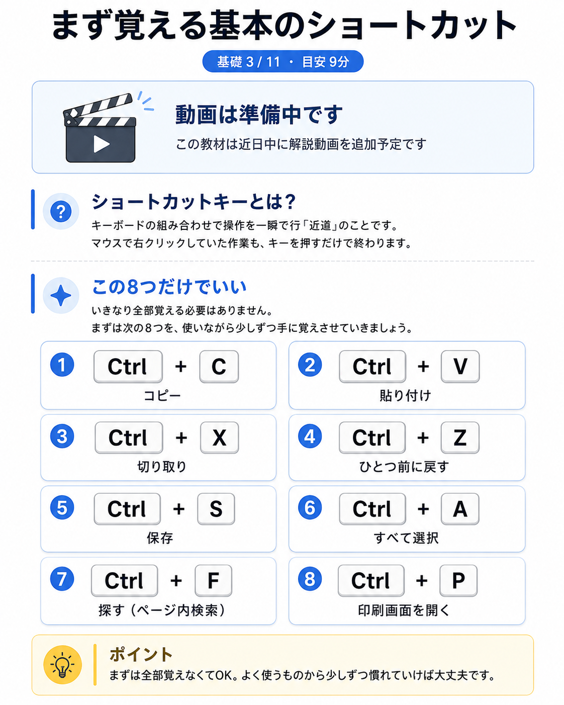
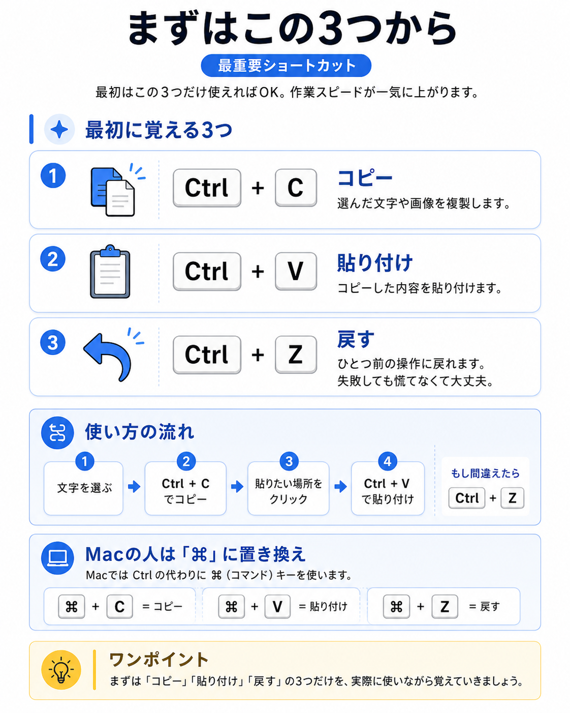

ショートカットキーとは、キーボードの組み合わせで操作を一瞬で行う「近道」のことです。マウスで右クリックして、メニューから「コピー」を探して……とやっていた作業が、キーを押すだけで終わります。1回の差はたった2〜3秒ですが、コピーや貼り付けは1日に何十回も使う操作。積み重なると、作業時間そのものが目に見えて変わります。実際に、マウス操作だけの人とショートカットに慣れた人とでは、同じ文書作業でも所要時間が2〜3割変わることも珍しくありません。
この教材のゴールは次の3つです。
- 基本の8つのショートカットを「知っている」状態にする
- そのうち最重要の3つを、実際に手を動かして体験する
- 「なぜ効くのか」を理解して、他のショートカットも自分で覚えていけるようになる
この8つだけでいい
ショートカットは何百種類もありますが、いきなり全部覚える必要はまったくありません。次の8つを、使いながら少しずつ手に覚えさせていきましょう。
- Ctrl + C：コピー
- Ctrl + V：貼り付け
- Ctrl + X：切り取り
- Ctrl + Z：ひとつ前に戻す（失敗しても慌てない）
- Ctrl + S：保存（こまめに押す癖を）
- Ctrl + A：すべて選択
- Ctrl + F：探す（ページ内を検索）
- Ctrl + P：印刷・PDFにする

押し方のコツ
「Ctrl + C」は、「Ctrlキーを押しながらCを押す」という意味です。同時にバチッと押そうとせず、次の順番で押すと失敗しません。
- 左手の小指で、キーボード左下の「Ctrl」を押さえたままにする
- 押さえたまま、人差し指で「C」をポンと1回押す
- 両方の指を離す
また、コピーや切り取りは「何を」の部分を先に選んでおく必要があります。文字ならマウスでなぞって反転させてから、Ctrl + C。「選ぶ → 押す」の順番です。
Macの人は「Ctrl」を「⌘」に
アップルのMacを使っている人は、上の「Ctrl」を「⌘（コマンド）」キーに置き換えれば、同じことができます。⌘はスペースキーのすぐ隣にあるので、親指で押すと楽です。それ以外の文字は同じです。なお、Macの「戻す」は「⌘＋Z」で共通ですが、「やり直し（戻したのをもう一度やる）」はWindowsが「Ctrl＋Y」、Macが「⌘＋Shift＋Z」と少し違うので、覚えておくと便利です。
まずはコピペと「戻す」から
とくに使う頻度が高いのが、コピー（Ctrl+C）・貼り付け（Ctrl+V）・戻す（Ctrl+Z）の3つです。この3つが手に馴染むだけで、作業スピードは体感で倍くらい変わります。中でもCtrl+Zは「失敗してもすぐ戻せる」という安心感をくれるキーです。間違って文章を消してしまっても、慌てずCtrl+Z。これを知っているだけで、パソコンがずっと怖くなくなります。Ctrl+Zは1回だけでなく、押した回数分さかのぼれるので、「あれ、どこまで戻せばいいか分からない」ときは、少し押しすぎたら「Ctrl+Y」で一つ進めれば大丈夫です。
コピーと切り取りの違いを理解する
初心者がよく混同するのが「コピー（Ctrl+C）」と「切り取り（Ctrl+X）」です。コピーは元の場所にデータを残したまま複製を作る操作、切り取りは元の場所から消して移動させる操作です。「同じものを2か所に置きたい」ならコピー、「場所を移動させたい」なら切り取りを使う、と覚えれば迷いません。切り取った直後にCtrl+Vを押し忘れると、データは一時的な置き場（クリップボード）に残ったままになるので安心してください。

覚える順番のコツ
8つ一気に覚えようとすると挫折します。おすすめの順番は「Ctrl+C → Ctrl+V → Ctrl+Z」の3つを1週間、手に馴染ませてから、「Ctrl+S（保存）」を足す、というように、1〜2個ずつ増やしていくやり方です。すでに指が覚えている操作に、少しずつ足していく方が、結果的に早く全部が身につきます。
よくあるつまずきと対処法
- 押しても何も起きない → コピーしたいものを先に選択できていないことがほとんどです。文字をなぞって反転させてから押しましょう
- 変な画面が開いた → 隣のキーを押している可能性があります。慌てずEscキー（左上）を押すか、Ctrl+Zで戻しましょう
- 覚えられない → 覚えるのではなく「使う回数」で手に入れるものです。今日から意識して使えば、1週間で自然に手が動くようになります
- Ctrl+Vで貼り付けたら文字の色や大きさまで変わってしまった → コピー元の書式（見た目）ごと貼り付けられたためです。「Ctrl+Shift+V」を使うと、文字の中身だけを貼り付けられます
- ノートパソコンでCtrlキーの位置が分からない → メーカーによって左下の配置が微妙に違いますが、多くは一番左下、または「Fn」キーの隣にあります